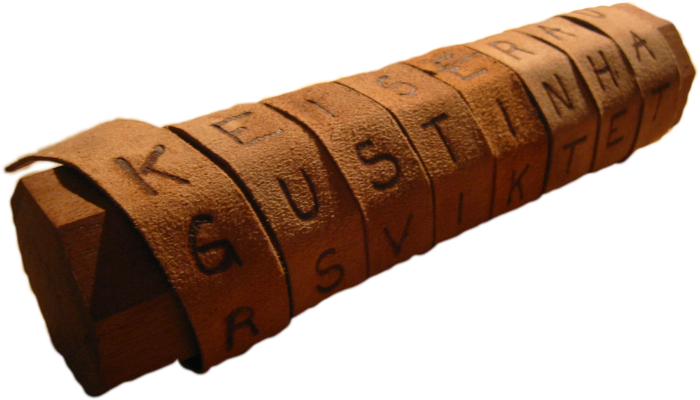
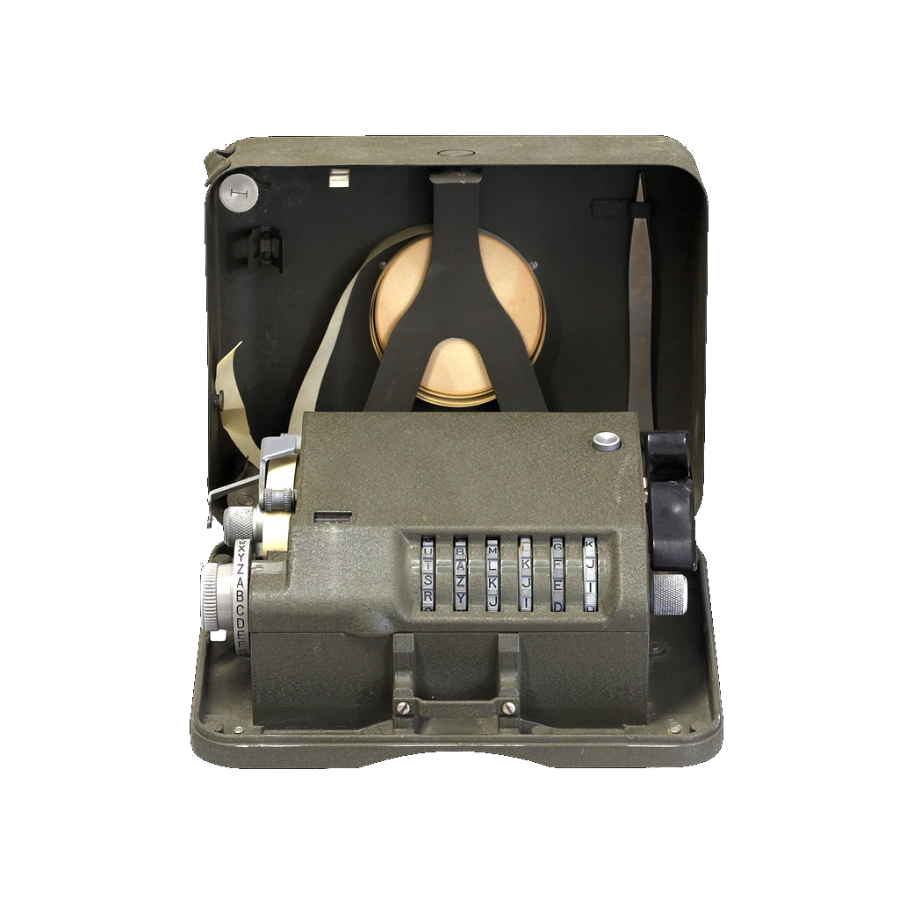
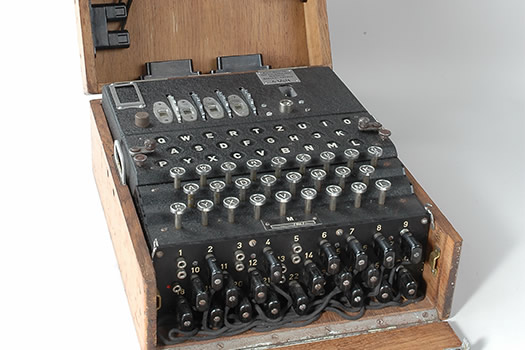
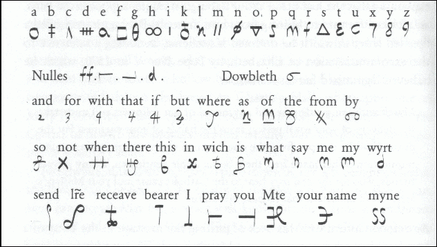

Historia szyfrowania zaczyna się prawie tak wcześnie jak historia cywilizacji, najpierw ukrywano wiadomość, ale co jeżeli trafi ona w niepowołane ręce?
Z tego powodu wymyślono szyfry i narzędzia szyfrujące
Jednym z pierwszych narzędzi wykorzystywanych do szyfrowania był tzw. Skytale
Pochodzi ze starożytnej Grecji, gdzie chętnie używali go już wojowniczy Spartanie. Jak działało? Na kawałek rzeźbionego drewna nawijano pergamin z zapisaną wiadomością. Aby ją odczytać, druga osoba musiała mieć też drewno o tej samej średnicy, dzięki czemu litery układały się w prawidłowym ciągu.

Zanim powstały komputery istniały inne bardzo zaawansowane maszyny szyfrujące świetnym przykładem może być M-209 -
maszyna, która została zaprojektowana przez marynarkę wojenną Stanów Zjednoczonych. Używano jej głównie podczas drugiej wojny światowej, choć także podczas wojny koreańskiej, która miała miejsce w latach 1950-1953. Kodowanie odbywało się tutaj przez ustawianie 6 dysków w losowej kolejności oraz używaniu specjalnych pokręteł. Wiadomość drukowana była na taśmie. Aby ją odczytać, odbiorca musiał znać ten sam układ talerzy. Zasada działania była podobna do tej z enigmy

|
|
Nie ma bardziej znanej maszyny szyfrującej niż enigma, najsłynniejsza maszyna drugiej wojny światowej najpierw była używana komercyjnie,
a dopiero później zrobiła karierę w armii III Rzeszy Niemieckiej.
Działanie Enigmy opierało się głównie o elektromechaniczne części oraz wirniki.
Każda zaszyfrowana tutaj wiadomość, miała swoje własne ustawienia, oparte o drukowaną wcześniej książkę z kodami.
Choć mogłoby się wydawać, że kod Enigmy jest nie do złamania, udało się to polskim i brytyjskim kryptologom.
Pod koniec wojny już każda z zaszyfrowanych wiadomości była odczytywana,
a jej rozszyfrowanie zajmowało przeważnie 1 dzień. Maszyny przy użyciu których alianci łamali szyfr enigmy były pierwowzorami komputerów.

Oprócz szyfrów istnieją również alfabety szyfrowe, świetnym przykładem może być szyfr Marii Stuart. W alfabecie szyfrowym każda z liter miała przyporządkowany jej znak, w dzisiejszych czasach nie korzysta się już z alfabetów szyfrowych ze względu na łatwość łamania.

|